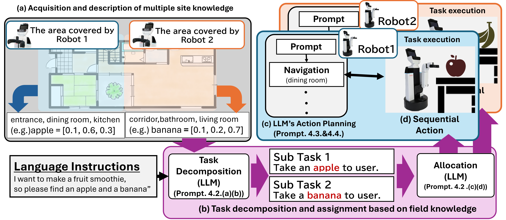

Abstract
We study cooperative object search by multiple robots that receive natural-language instructions including multi-object or context-dependent goals (e.g., “find an apple and a banana”). Our framework integrates a large language model (LLM) with a spatial concept model that provides room names and room-wise object presence probabilities learned on each robot’s assigned area. With a tailored prompting strategy, the LLM infers required items from ambiguous commands, decomposes them into subtasks, and allocates them to robots that are most likely to succeed given their local knowledge. In experiments, the method achieved 47/50 successful allocations, outperforming random (28/50) and commonsense-only allocation (26/50), and was validated qualitatively on real mobile manipulators. [See paper]
Method
Each robot learns on-site knowledge via a spatial concept model that links places (e.g., kitchen, bedroom) and object occurrence probabilities. The pipeline has four stages: (1) task decomposition from language, (2) knowledge-aware subtask allocation, (3) sequential action planning (navigation, object detection, pick, place), and (4) execution with feedback loops (FlexBE).
Four-stage pipeline: knowledge acquisition → decomposition & allocation → action planning → execution with feedback.
- On-site knowledge: place vocabulary + object↔location probabilities
- LLM prompts: few-shot design to infer items, decompose tasks, and justify allocation
- Execution: closed-loop behaviors and replanning on success/failure signals
Experiments
We evaluate allocation accuracy across instruction types (random, hard-to-predict, common-sense, mixed). The proposed method reaches 47/50 correct allocations versus random 28/50 and commonsense-only 26/50.
Resources
- Paper (arXiv): arXiv:2509.12838
- Submission PDF (AROB/ISBC 2026, under review): PDF
- Video: Demo
Code availability: not publicly released at this time.
Demo Video
Demonstration of our multi-robot task planning framework.
BibTeX
@article{Murata2025MultiRobotTaskPlanning,
title = {Multi-Robot Task Planning for Multi-Object Retrieval Tasks with Distributed On-Site Knowledge via Large Language Models},
author = {Murata, Kento and Hasegawa, Shoichi and Ishikawa, Tomochika and Hagiwara, Yoshinobu and Taniguchi, Akira and El Hafi, Lotfi and Taniguchi, Tadahiro},
journal = {arXiv preprint arXiv:2509.12838},
year = {2025}
}
Please cite the arXiv version until the conference review is complete.
Acknowledgments
Partially supported by JST Moonshot (JPMJMS2011), JSPS KAKENHI (JP25K15292, JP23K16975), and JST Challenging Research Program for Next-Generation Researchers (JPMJSP2101).